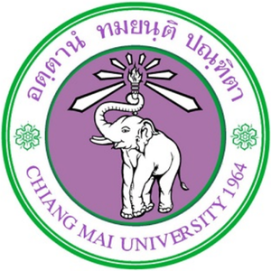
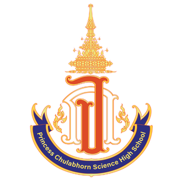

About
I'm a Computer Engineering student at Chiang Mai University. I grew up in Chiang Rai,
and in middle school I earned a scholarship to Princess Chulabhorn Science High School Chiang
Rai —
which turned out to shape a lot of what came after.
Through high school, I threw myself into competitions and projects, partly
to build a portfolio for university, but mostly because I genuinely liked
the work. Most of what I made started as a hackathon idea or a school
project and grew from there.
When I got to university, I stopped. No competitions, no side projects — just coursework.
It didn't take long to realize something was missing.
So I came back. The goal now is simpler and more deliberate than before:
build things that are actually useful. Not just to win, but to create work
that means something — to an industry, to a community, or to the people who might use it.
Education

Chiang Mai University
Chiang Mai, Thailand
Bachelor of Engineering in Computer Engineering
2025 - Present

Princess Chulabhorn Science High School Chiang Rai
Chiang Rai, Thailand
High School · Scholarship
2021 - 2024
Outside of class
When I step away from screens, I head outdoors — hiking trails, chasing waterfalls,
anything that puts distance between me and the noise. There's something a little
contradictory about a tech student who finds most of his rest in slow, analog nature,
but that's genuinely where I recharge.
Music is the other constant. It's the most reliable thing I've found for when exhaustion
sets in — I've never finished a session and felt worse than when I started. Back in high
school, I put together a small band that became something of a legend at school, which
I'm still quietly proud of. I'm not exceptional at every instrument, but I play guitar,
drums, bass, piano, and brass well enough to mean it.